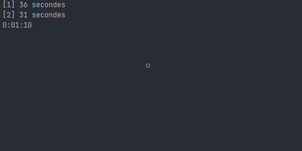
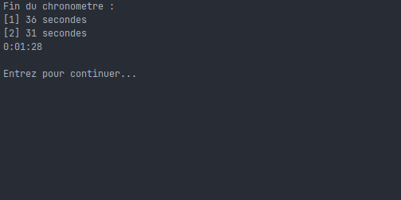

Le chronomètre permet de compter le temps qui s'est écoulé entre le moment où vous le lancez le chronomètre et le moment où vous l'arrêtez. L'affichage est le suivant après avoir lancé puis arrêté le chronomètre :  